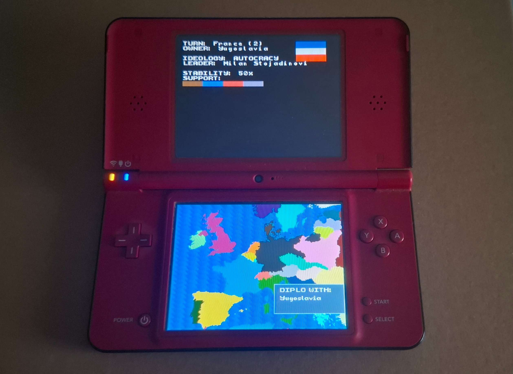
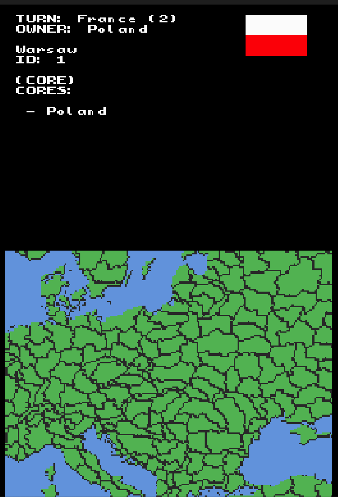
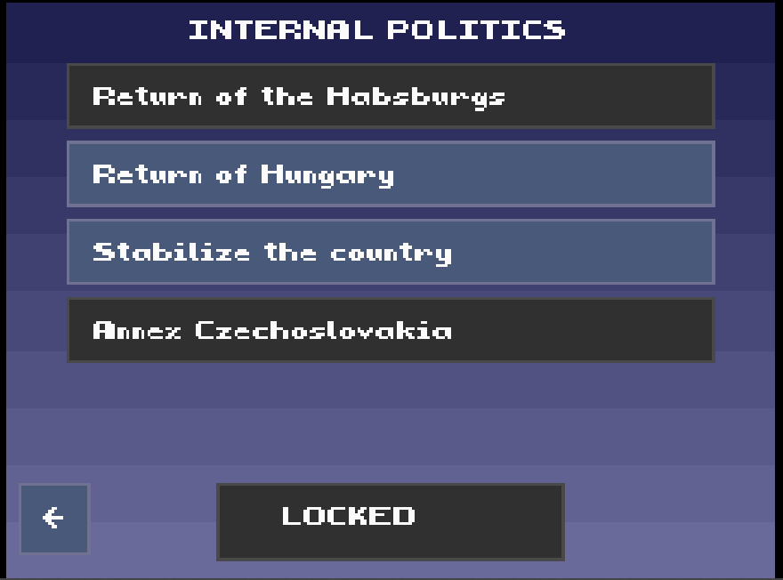
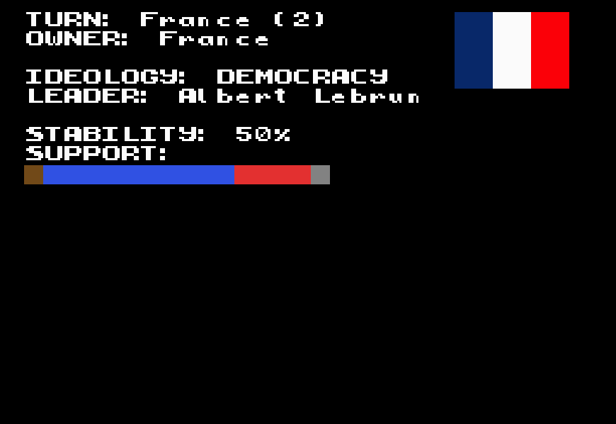
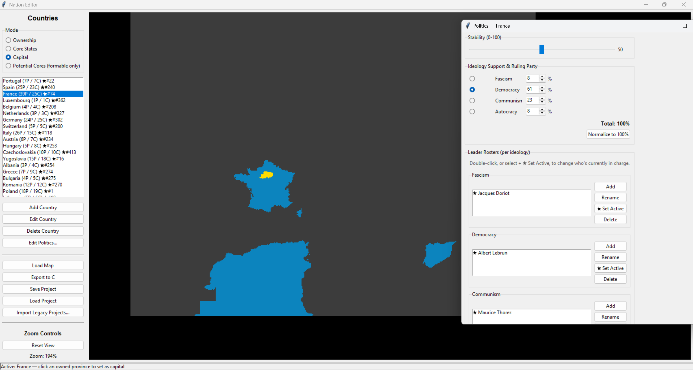

PocketWars
- Period
- August 2026-Present
- Tool(s) used
- C/C++ (libnds, BlocksDS)
Python (Tkinter)
grit (graphics conversion) - Team size
- 1 person (solo project)
- Role(s)
- Sole developer
Systems designer

The project

PocketWars is a turn-based strategy game for the Nintendo DS, conceptually similar to a miniature Paradox strategy game (like Hearts of Iron or Europa Universalis): a map of Europe divided into provinces, country ownership, internal politics, nation formation and a data-driven decision system. I'm writing it from scratch in C/C++ on top of libnds with the BlocksDS toolchain, with no engine or high-level libraries: every system is built by hand against the console's real hardware. It's a personal project under active development, which I use as an excuse to practice low-level programming and data systems design.
The system
All the design, research and code are individual work, supported by a data pipeline generated with my own Python tools.

Low-level rendering and text
The DS's two screens work independently: the touch screen draws the map
as a raw bitmap via DMA, while the top screen uses a tile-based background for the
info panel. I implemented two different text renderers (tiles
vs. sprite-per-glyph) with my own bitmap font, based on each screen's
constraints. Along the way I diagnosed some non-trivial hardware bugs: the DS uses
BGR15 instead of RGB15 (the map was rendering black due to a
misplaced bit), and a recurring DTCM + DMA pattern where DMA can't
read directly from the CPU's stack.

Data-driven decision system
Each country can take "decisions" (playable events) defined entirely as
data. Conditions are compiled to postfix notation (RPN) and
evaluated with a small stack machine with no recursion or pointers, designed to be
robust in embedded C. It includes reusable named conditions and a real
boolean expression parser to compose them via text. Effects (stability, ideological
support, change of ruler, forming or annexing a country...) are applied as an
ordered list of instructions.

Political system and formable nations
Leadership is a flat roster of leaders with a stable ID per country and
ideology, designed from the start for successions (coups, elections, deaths)
without restructuring data. Formable nations reuse existing but
inactive countries instead of creating new identities on the fly, and I separated turn
order from country identity so that forming a nation doesn't duplicate or skip turns.

Custom authoring tools
No game data is edited by hand in C: everything is generated from three desktop
tools in Python/Tkinter that I wrote myself, which parse the generated files
as the single source of truth to avoid losing ID consistency. I merged two old
tools into one after finding a real desync bug between separately
exported files.
Current status
Under active development. Already working: the map, province ownership, player-vs-AI turns, the decision system, internal politics, nation formation and the authoring tools. Still to do: AI for the other powers, combat/resources and a diplomacy screen.
What I learned
- Embedded C/C++ programming against real hardware (Nintendo DS via libnds/BlocksDS), with no engine or high-level abstractions.
- Direct VRAM and DMA management, with diagnosis of low-level hardware bugs.
- Design and implementation of a data-driven decision system, with conditions compiled and evaluated by a stack machine.
- Modeling a political system and nation-formation mechanics designed for leadership succession and country identity changes.
- Building a full data pipeline with custom desktop tools in Python/Tkinter.